版本控制--Git
版本控制
-
版本控制系统（VCS: Version Control System）
- 解决：版本对比，恢复，管理，备份，合并等版本问题
- 记录每个文件的历史修改，可以恢复到任意的历史版本
- 解决团队开发时的代码同步问题
-
版本控制软件：
- CVS（Concurrent Version System）： 古老，集中式
- SVN (Subversion)： 开源、免费，CVS的替代者，用得最多的集中式版本控制系统
- Git： 由linux系统的作者linus本人开发，为了管理linux内核源码。开源、免费，速度快，最先进的分布式版本控制软件。
- BitKeeper： bitmover公司产品，分布式，促使Git诞生
- Mercurial（水银，汞）： python实现，分布式
-
集中式和分布式
-
集中式: SVN
- 版本库保存在中央服务器，所有用户与中央服务器进行最新代码的同步操作；
- 严格的权限控制，方便统一控制管理，对用户进行目录级的访问权限控制（svn）
- 必须联网才能工作，否则无法进行版本管理
- 只要中央服务器挂了，所有历史版本信息就丢失了
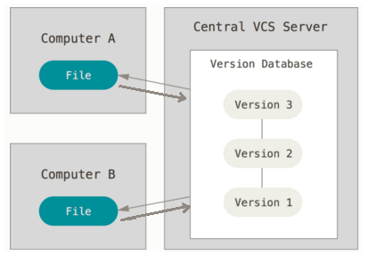
-
分布式: git
- 每个用户本地电脑上都有完整的版本库，可以离线工作，速度快
- 安全性高，每用户电脑里都有完整的版本库，坏了复制一份即可
- 倾向于开源项目管理，对于保密项目，如果有一个人clone了代码，则项目所有的历史版本就都泄漏了
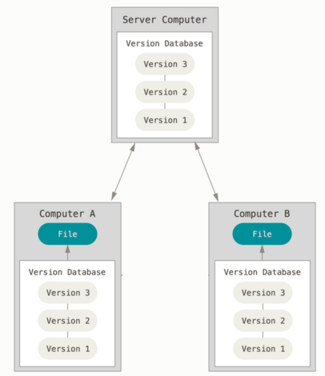
-
Git版本库（本地仓库）
Git版本库认识
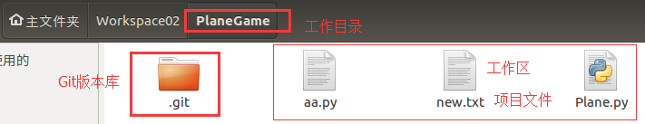
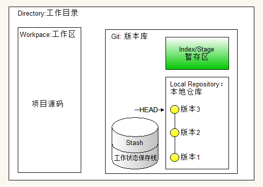
- Directory：由Git管理的一个目录，即项目的根目录。包含我们的工作区和Git仓库信息。
- Workspace： 工作区，即项目的根目录，但不包括.git目录。
- .git： Git版本库目录，保存了所有的版本信息。该目录会由git初始化仓库的时自动生成。
- Index/Stage(阶段；舞台)： 暂存区，我们修改了代码，会先提交到暂存区，然后再从暂存区提交到本地仓库。
-
Local Repo： 本地仓库，保存了项目所有历史变更版本
- HEAD指针： 表示工作区当前版本，HEAD指向哪个版本，当前工作区就是哪个版本；通过HEAD指针，可以实现版本回退。
- Stash(存放；贮藏)： 工作状态保存栈，用于保存和恢复工作区的临时工作状态（代码状态）。
Git安装和配置
-
安装git
sudo apt-get install git -
设置git用户名和邮箱
git config --global user.name "Your Name" git config --global user.email "youremail@example.com"git服务器会通过此用户名和邮箱来标识是谁提交的代码, 例如github:
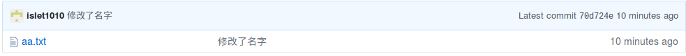
创建版本库&提交代码&查看历史版本
一、创建版本库
-
创建飞机大战项目：PlaneGame, 并进入到该项目下。
-
编写飞机大战项目的源码： 比如添加一个文件Plane.py
-
为项目创建Git版本库
git init执行完该命令之后，在当前目录下会生成一个.git目录，在该目录下会保存项目所有历史变更版本。
二、提交代码
提交代码（到本地仓库）之后，会在版本库生成一个版本，分两步操作：
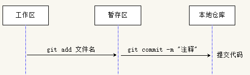
-
提交代码（代码修改）到 暂存区
# 一个文件作了修改，可以指定文件名 git add 文件名 # 多个文件作了修改，可以指定当前目录。意思： 把当前目录下所有的代码修改都提交到暂存区 git add . -
提交 暂存区 的代码到 本地仓库
git commit -m "代码修改说明" -
注意事项：
如果使用
commit命令，忘记了添加参数-m选项，则git会默认使用GNU Nano的编缉器打开.git/COMMIT_EDITMSG文件。如下：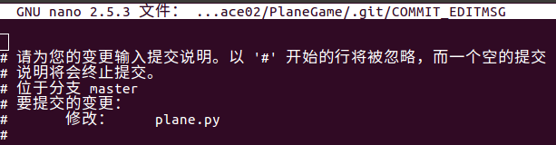
有两种处理方式：
- 第1种： 可以按 ctrl+x 退出即可， 然后再重新执行
git commit并指定 -m 选项提交代码 - 第2种： 在打开的Nano编缉器中输入提交的注释说明， 再按
ctrl + o保存， 接着按回车确认文件名， 最后再按ctrl + x退出， 回去之后，git就会提交之前的代码了。
- 第1种： 可以按 ctrl+x 退出即可， 然后再重新执行
三、查看历史版本
-
通过以下命令查看提交了哪些历史版本：
git log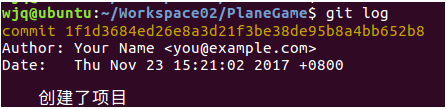
-
用带参数的git log，输出的信息会短一些：
git log --graph --pretty=oneline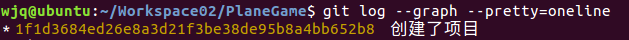
管理修改--查看和提交工作区修改
-
查看工作区修改：把工作区的代码提交到本地仓库之前，想查看工作区作了哪些修改（包括代码的新增，修改，删除），可以通过以下命令：
git status没有修改时提示：
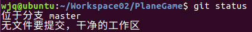
有修改时提示：
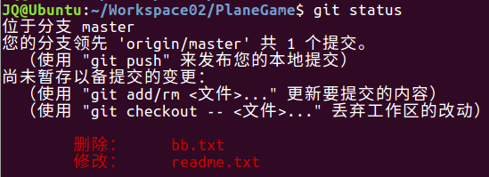
-
了解修改后提交代码： 要管理这些修改，把这些代码都提交到本地仓库，分两步：
-
提交到暂存区
git add .提交代码暂存区后，再通过
git status查看状态，字体变色了，如下： 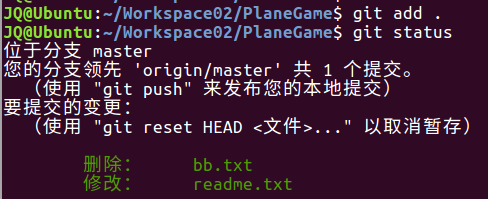 -
提交到本地仓库
git commit -m "注释"
-
管理修改--对比文件
-
对比工作区和暂存区的某个文件，了解作了哪些修改：
git diff 文件名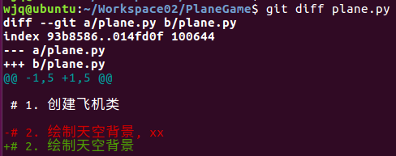
说明：
- 减号表示： 本地仓库的代码
- 加号表示： 工作区的代码
撤销修改--版本回退
一、版本回退
-
查看历史提交版本（以便确定要回退到哪个版本）：
git log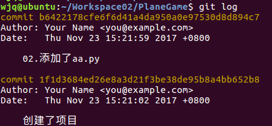
-
工作区回退到某个版本:
git reset --hard <commit版本号>选项说明：
- --hard 重置： 本地仓库HEAD指针、暂存区、工作区
- --mixed 重置： 本地仓库HEAD指针、暂存区 【默认值】
- --soft 重置： 本地仓库HEAD指针
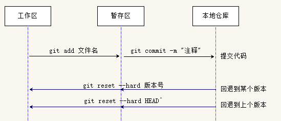
-
查看所有的历史版本：（以便确定要回到未来的某个版本）
git reflog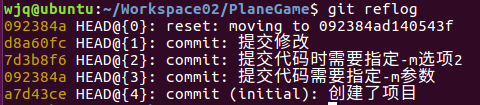
注意：使用
git log只能看到当前版本之前的版本 -
使用同样的命令，回到未来的某个版本：
git reset --hard <commit版本号>
二、通过 HEAD指针 实现版本回退
HEAD指向的版本就是当前版本（即工作区版本），Git允许我们在通过HEAD指针回退到某个历史版本
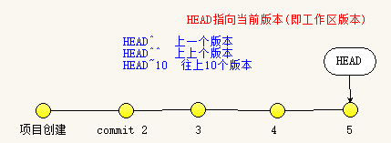
# 回退到上个版本
git reset --hard HEAD^
# 回退到上上个版本
git reset --hard HEAD^^
# 往上10个版本
git reset --hard HEAD~10
撤销修改--撤销工作区和暂存区修改
有时候改错了，想撤销工作区和暂存区的修改，要怎么做呢？
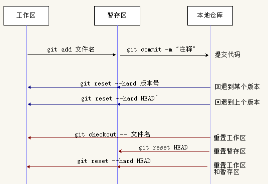
-
场景1： 改乱了工作区的代码，想撤销工作区的代码修改
git checkout -- <file> # 撤销指定文件的修改 git checkout -- . # 撤销当前目录下所有修改小提示: 通过
git status能看到上述的命令提示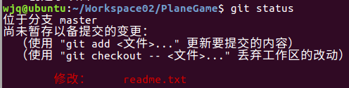
说明：
git checkout会用本地仓库中的版本替换工作区的版本，无论工作区是修改还是删除，都可以“一键还原”。
-
场景2： 改乱了工作区某个文件，并且还提交到了暂存区，同时撤销工作区和暂存区修改：
方法一：
-
第1步： 撤销暂存区修改
git reset HEAD <file> # 撤销暂存区指定文件的修改 git reset HEAD # 撤销暂存区所有修改小提示: 通过
git status能看到上述的命令提示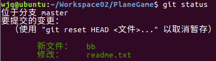
-
第2步： 撤销工作区修改， 请参见场景1
方法二：
直接使用以下命令，一次性同时撤销暂存区和工作区的修改：
git reset --hard HEAD -
删除文件
如果在本地，通过文件管理器，或者通过rm命令，把一个文件删掉了，有两种场景：
-
场景1： 如果该文件是属于误删，那么要恢复回来：
git checkout -- 文件名 -
场景2： 确实要删除该文件：
-
提交代码修改到暂存区：
git add <文件名> # 把文件修改操作，提交到暂存区 -
工作区删除后，提交代码修改到本地仓库
git commit -m "注释"
-
分支管理
分支的概念及使用
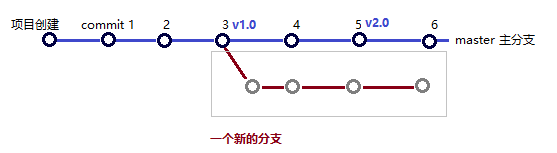
- 分支就是一条独立的版本线，在此分支开发一个单独的功能，提交和下载代码，不会对其它分支造成任何影响。
- Git创建分支极快，瞬间完成，无论你的版本库是1个文件还是1万个文件。
-
Git鼓励大量使用分支，开发一个新的功能，最好新创建一个分支，在新分支实现完功能之后，再合并分支。解决bug也可以创建一个新的分支，解决完bug之后，再把分支删除掉。
-
分支使用
在实际开发中，我们会创建多个分支，按照几个基本原则进行分支管理：
- master 主分支： 该分支是非常稳定的，仅用来发布新版本，不会提交开发代码到这里
- dev 开发分支： 不稳定的，团队成员都把各自代码提交到这里。当需要发布一个新版本，经测试通过后，把dev分支合并到master分支上, 作为一个稳定版本，比如v1.0
- featrue 功能分支： 团队每个人负责不同的功能，分别有各的分支，在各自的分支中干活，适当的时候往 dev开发分支合并代码。
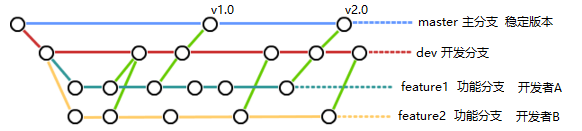
分支创建查看切换及合并
一、分支工作原理
-
在Git版本库中，默认有一条版本线，这个分支叫主分支，即master分支。严格来说，HEAD不是指向提交，而是指向master，master才是指向提交的。
一开始的时候，master分支是一条线，Git用master指向最新的提交，再用HEAD指向master，就能确定当前分支，以及当前分支的提交点：
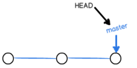
每次提交，master分支都会向前移动一步，这样，随着你不断提交，master分支的线也越来越长。
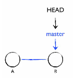
-
当我们创建新的分支，例如dev时，Git新建了一个指针叫dev，指向master相同的提交，再把HEAD指向dev，就表示当前分支在dev上：
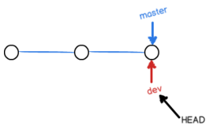
-
从现在开始，对工作区的修改和提交就是针对dev分支了，比如新提交一次后，dev指针往前移动一步，而master指针不变:
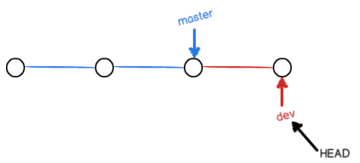
-
假如我们在dev上的工作完成了，就可以把dev合并到master上。Git怎么合并呢？最简单的方法，就是直接把master指向dev的当前提交，就完成了合并。
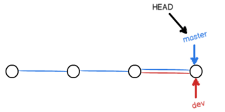
小结：
- 每个分支都有一个指针，指向当前分支的最新版本
- 每次提交一个版本，分支指针就会向前移动一步，HEAD指针也会往前移动一步；
- HEAD指针： 表示工作区当前版本，HEAD指向哪个版本，当前工作区就是哪个版本；
二、操作演示
-
创建分支
git branch dev # 创建分支 (开发分支) -
切换分支
git checkout dev # 切换分支以上两个操作，可以使用以下一个命令代替
git checkout -b dev # 创建+切换分支 -
查看当前所处的分支：
git branch命令会列出所有分支，当前分支前面会标一个*号git branch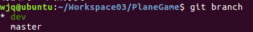
-
在新分支上修改代码，提交，然后再 通过
git checkout master切换回主分支，在主分支查看代码，发现不会对主分支有任何的影响 -
再把dev分支的代码合并到master分支上（合并到哪个分支就需要先切换回哪个分支），合并后，打开修改的文件，就能看到新内容了
git merge dev
分支合并冲突演示
上面演示了分支的创建和合并，我们在dev分支作了修改，而master分支并没修改，所以没遇到问题，非常简单地就完成了。而实际开发中，常用master分支也是会有修改了，两个分支各自都有修改，合并时，就不会这么一帆风顺了，合并时会遇到 代码冲突 的问题：
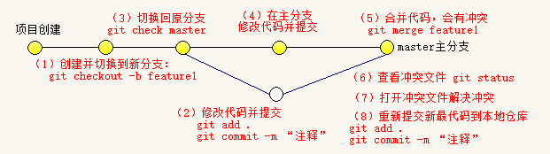
-
创建 并 切换 到feature1新分支，继续我们的新分支开发：
git checkout -b feature1 -
随便修改一下Plane.py，并提交代码：
git add . git commit -m "创建feature1新分支，并添加新功能" -
切换回master分支：
git checkout master -
随便修改一下Plane.py，并提交代码：。
git add . git commit -m "master分支修改"现在，master分支和feature1分支各自都分别有新的提交，变成了这样
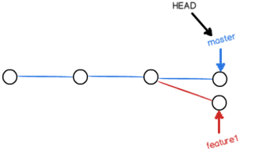
-
合并出现冲突：
执行合并命令
git merge feature1出现冲突，Git告诉我们，Plane.py文件存在冲突，必须手动解决冲突后再提交:
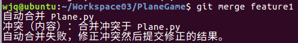
查看并解决冲突
-
查看并解决冲突
git status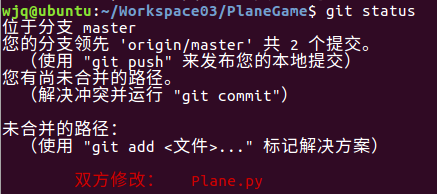
通过
vi Plane.py查看Plane.py内容如下：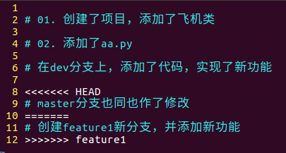
Git用<<<<<<<，=======，>>>>>>>标记出不同分支的内容，我们修改合并内容如下，然后保存。
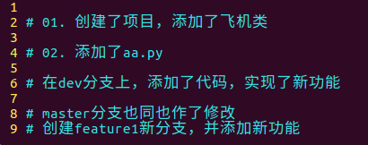
-
再提交解决冲突后的代码
git add . git commit -m "冲突解决"最后变成这样子：
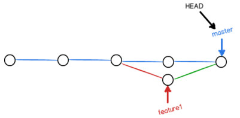
-
查看分支情况
用带参数的git log也可以看到分支的合并情况：
git log --graph --pretty=oneline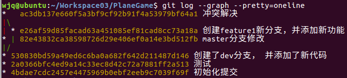
分支合并演示2
通过前面的例子，关于分支合，我们已经演示了下面的1，2两种场景，对于场景3后结果会怎么样呢？
| master分支 | feature1分支 | feature1合并到master的结果 | |
|---|---|---|---|
| 场景1 | 无修改 | readme文件 有修改 |
自动合并成功 |
| 场景2 | readme文件 有修改 |
readme文件 有修改 |
合并后有冲突，需要解决冲突，再提交代码 |
| 场景3 | 无修改 | 有新增文件 | ?? |
实验结果：
-
合并后，会自动弹出一个窗口, 要求输入提交的注释，输入完注释后，按
ctrl+x返回退出：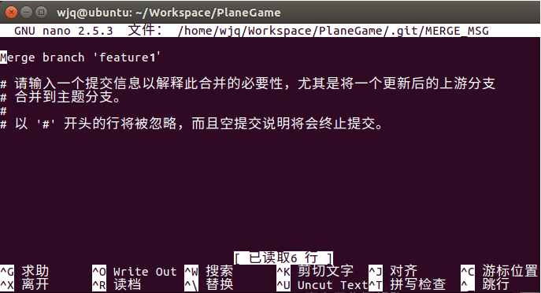
-
新分支的新文件，在master分支中不存在，所以合并到master分支后，要把该新文件提交到主分支上，就需要指定commit命令的提交注释。
分支删除
-
删除一个已合并的分支，注意，无法删除当前所在的分支，需要切换到其它分支，才能删除
git branch -d 分支名 -
如果分支还没有被合并，删除分支将会丢失修改。如果要强行删除，需要使用如下命令：
git branch -D 分支名 -
删除之后通过以下命令，就查看不到了
git branch
BUG分支(保存工作现场)
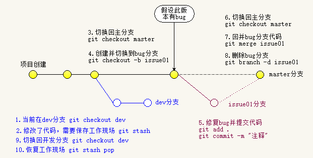
- bug分支：当你接到修复一个bug任务的时候，可以创建一个bug临时分支（例如：issue01）来修复它，修改完成再把该分支删除掉
- 问题：当前正在dev上进行的工作还没有提交, 工作只进行到一半，还没法提交，但如果不提交就切换到其它分支工作，代码会丢失，怎么办呢？
-
使用工作状态保存栈：Git版本库中有一个 Stash 临时状态保存栈, 可以使用它来保存当前工作现场，把当前工作现场保存起来，等完成了其它紧急工作，再回来恢复工作现场，继续接着工作
-
工作状态保存栈使用：
-
保存当前工作现场
git stash -
查看有哪些临时现场
git stash list输出结果：
stash@{0}: WIP on dev: 6224937 add merge
-
恢复某个临时现场
git stash apply stash@{0} -
恢复最近保存的工作现场
git stash pop -
清空工作状态保存栈
git stash clear
-
-
案例演示
假设当前在dev分支上工作, master分支有bug，需要紧急修复
git checkout dev # 当前在dev分支上工作 git stash # 工作到一半，需要保存工作现场 # 要修复到哪个分支的bug(假定是master分支)，就切换到哪个分支，并创建临时bug分支 git checkout master # 切换到master分支 git checkout -b issue01 # 创建并切换到bug临时分支 git add readme.txt git commit -m "fix bug" # bug修改完，提交修改 git checkout master # 改完bug切换回master主分支 git merge issue01 # 合并bug分支到主分支 git branch -d issue01 # 删除bug分支 git checkout dev # 切换回开发分支 git stash pop # 恢复到之前的工作现场
使用Github（远程仓库）
Git托管平台
-
GitHub
- 官网地址： http://www.github.com
- 世界最知名的开源项目免费托管平台，有海量的开源代码
- 只支持git版本控制，故名gitHub
- GitHub上免费托管的项目，任何人都可以看到，但只有自己能改
- 如果想让上传的项目别人看不到，可以交点保护费，把github上的项目变成私有
- 速度慢
-
码云
- 官网地址： http://www.gitee.com
- 是开源中国社区团队推出的基于Git的在线代码托管平台
- 可免费托管私有库，不限制私有和公有库数量
- 速度快
配置SSH密钥对
-
Git通信协议
- Git支持多种协议，包括SSH, https协议
- 使用ssh协议速度快，但是在某些只开放http端口的公司，内部就无法使用ssh协议， 而只能用https了
- 与ssh相比，使用https速度较慢，而且每次通过终端上传代码到远程仓库时，都必须输入账号密码
-
配置SSH密钥对
Git服务器会使用SSH密钥对来确认代码提交者的合法身份。
-
登录github网站，注册github账号
-
创建SSH密钥对
查看ubuntu 用户根目录下(即： /home/用户名 目录)， 是否有
.ssh目录 （可以通过在文件管理器中按ctrl + h显示隐藏文件快速查看）- 有
.ssh目录，并且该目录下有id_rsa 和 id_rsa.pub这两个文件，则跳到第2步 -
没有，打开Shell执行以下命令创建
$ ssh-keygen -t rsa -C youremail@example.com按三次回车，即可生成.ssh目录，里面存放的就是ssh的密钥对：id_rsa （私钥）和id_rsa.pub （公钥）
- 有
-
查看生成的：id_rsa.pub公钥
cat ~/.ssh/id_rsa.pub会输出类似以下的字符串，即： 公钥字符串：
ssh-rsa AAAAB3NzaC1yc2EAA(省略...)AvoIWr9MB5Dihmv62J islet1010@163.com -
把上述的公钥字符串配置到 GitHub 的后台
登陆GitHub，点击 头像 -> settings -> SSH And GPG keys -> New SSH Keys:
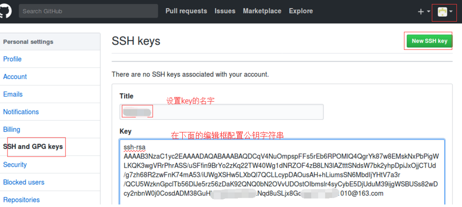
GitHub会通过上面的id_rsa.pub，能够识别是你进行了代码提交，而不是别人冒充的。
-
验证是否配置成功
在终端执行以下命令:
ssh -T git@github.com第一次，需要输入“yes”, 若返回类似 “Hi islet1010! You've successfully authenticated”，则配置成功。如下图：
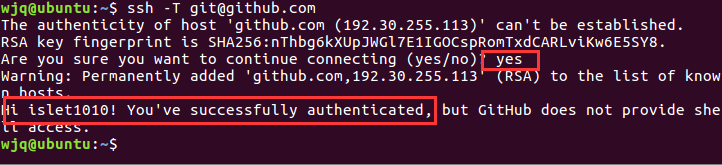
-
上传本地项目
上传用户本地的项目到服务器：
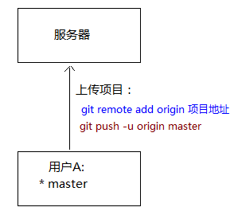
-
创建远程仓库: 登陆GitHub创建一个新的远程仓库：
在右上角找到“Create a new repo”按钮，Repository name填入项目名，再点击创建按钮：
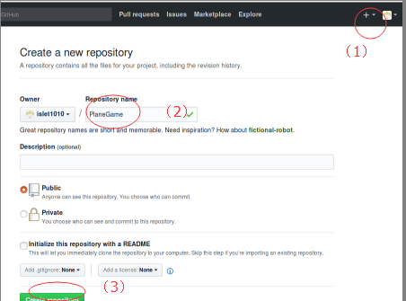
仓库创建出来后，目前为空，要把本地的项目上传上来。
-
获取刚创建的Github远程仓库的地址
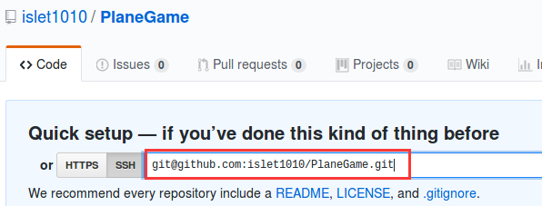
git@github.com:islet1010/PlaneGame.git -
添加Git远程仓库地址
git remote add origin git@服务名:路径/仓库名.git # 示例： git remote add origin git@github.com:islet1010/PlaneGame.git如果提示：
fatal: 远程 origin 已经存在， 则只需使用以下命令将远程配置删除，重新添加即可：git remote rm origin -
推送代码到服务器
# -u 参数把本地的master分支和远程的master分支关联起来 git push -u origin master看到类似如下的返回，则表示代码上传到远程仓库成功！
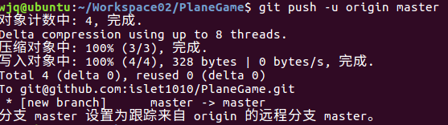
克隆项目
clone 克隆: 下载服务器上的项目到本地
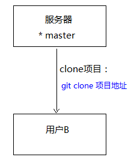
-
获取要clone项目的地址，假设是上面刚上传的项目，它的地址：
git@github.com:islet1010/PlaneGame.git -
进入ubuntu的某一个目录，例如
Workpace03目录，目前该目录为空： -
执行clone命令
git clone git@github.com:islet1010/PlaneGame.git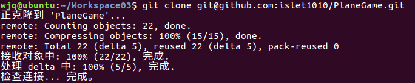
如上图，下载项目成功
推送分支
把本地仓库 该分支所有的修改，推送到远程仓库对应的分支上,以便团队中其中人看到：
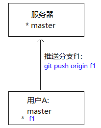
注意：并不需要把本地所有分支，都推送到服务器
- master分支是主分支，因此要时刻与远程同步；
- dev分支是开发分支，团队所有成员都需要在上面工作，所以也需要与远程同步；
- bug分支只用于在本地修复bug，就没必要推到远程了，修复完bug一般会删除掉；
- feature分支是否推到远程，取决于你是否和你的小伙伴合作开发。
演示：
-
创建并切换到分支f1
git checkout -b f1 -
修改代码并提交
git add . git commit -m "注释" -
推送分支到服务器
git push origin f1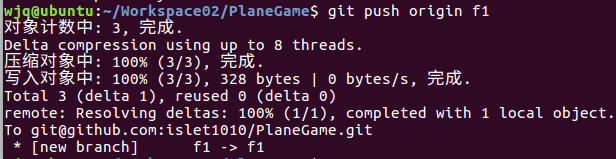
-
到github上查看，会看到有新增了分支
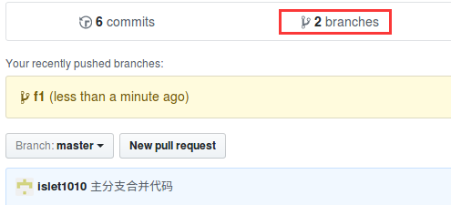
拉取分支
团队开发时，更新服务器上别人提交的代码到本地：
-
场景一： 要拉取的分支本地不存在:
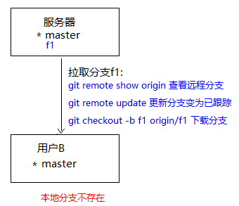
-
查看远程分支情况：
git remote show origin -
对于 已跟踪的远程分支，可以通过以下命令直接拉取下来（本地和远程分支的名称最好一致）：
git checkout -b 本地分支名 origin/远程分支名 -
对于 新的远程分支，需要先获取更新，让新分支变为已跟踪状态，然后才能拉取。否则直接拉取会出错，比如拉取f1，出错如下：
正确步骤：
-
通过以下命令获取更新新分支，让新分支变为已跟踪状态
git remote update再查看，新分支f1就变为已跟踪状态了：

-
再通过以下命令拉取新分支：
git checkout -b f1 origin/f1该命令会在本地创建出f1分支，并自动把服务器的f1分支的内容拉取下来。
-
-
-
场景二： 要拉取的分支本地已存在：
-
情况1：本地分支与远程分支 已建立关联：
git pull # 拉取服务器分支的最新代码，与当前本地分支合并-
如果远程分支没有更新，则提示：
-
如果有更新，会提示更新内容：
-
如果有冲突，按前面介绍的分支合并冲突方式解决。

-
-
情况2：本地分支与远程分支 未建立关联：
-
跟踪远程分支：建立本地与远程分支的链接关系:
git branch --set-upstream-to=origin/远程分支名 本地分支名提示：若本地分支与远程分支未建立关联，使用
git pull下载该远程分支，会有no tracking information出错提示 -
然后再拉取分支最新代码：
git pull
-
-
扩展资料
https://git-scm.com/book/zh/v2
忽略特殊文件
- 某些文件需要放到Git工作目录中，但又不能提交它们，比如保存了数据库密码的配置文件等。
- 每次git status都会显示 “Untracked files ...”
- 在Git工作区的根目录下创建一个特殊的
.gitignore文件，然后把要忽略的文件名填进去，Git就会自动忽略这些文件 -
以下文件应该忽略：
- 操作系统自动生成的文件，比如缩略图Thumbs.db等
- 忽略编译生成的中间文件、可执行文件等，比如Java编译产生的.class文件
- 有敏感信息的配置文件，比如存放口令的配置文件
-
不需要从头写.gitignore文件，GitHub已经为我们准备了各种配置文件，只需要组合一下就可以使用了。所有配置文件可以直接在线浏览：https://github.com/github/gitignore：
-
示例：
.gitignore文件# Windows: Thumbs.db ehthumbs.db Desktop.ini # Python: *.py[cod] *.so *.egg *.egg-info dist build # My configurations: db.ini